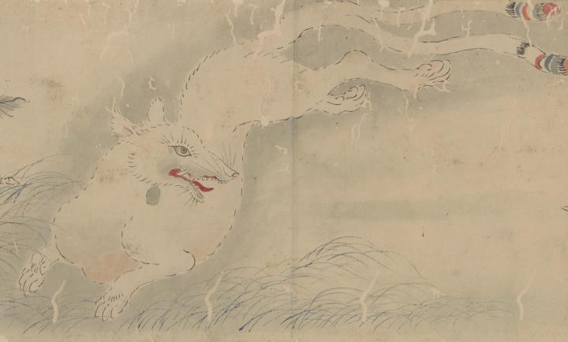

← 图鉴索引

尾が二本に分かれた二尾の狐（玉藻前）が攻撃されている。
出典：親書誌：U426_nichibunken_0366：玉藻前物語絵巻；タマモノマエ モノガタリ エマキ／日付：2014／資源識別子：U426_nichibunken_0366_0002_0000
Copyright (c)2010- International Research Center for Japanese Studies, Kyoto, Japan. All rights reserved.